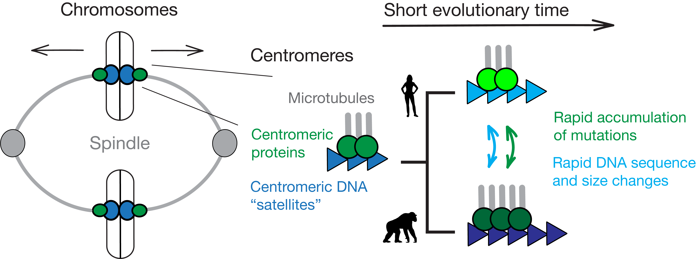
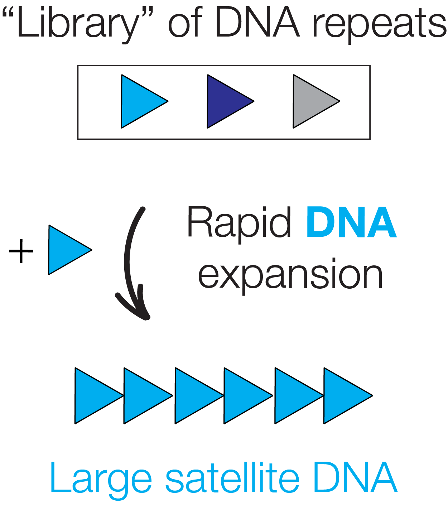
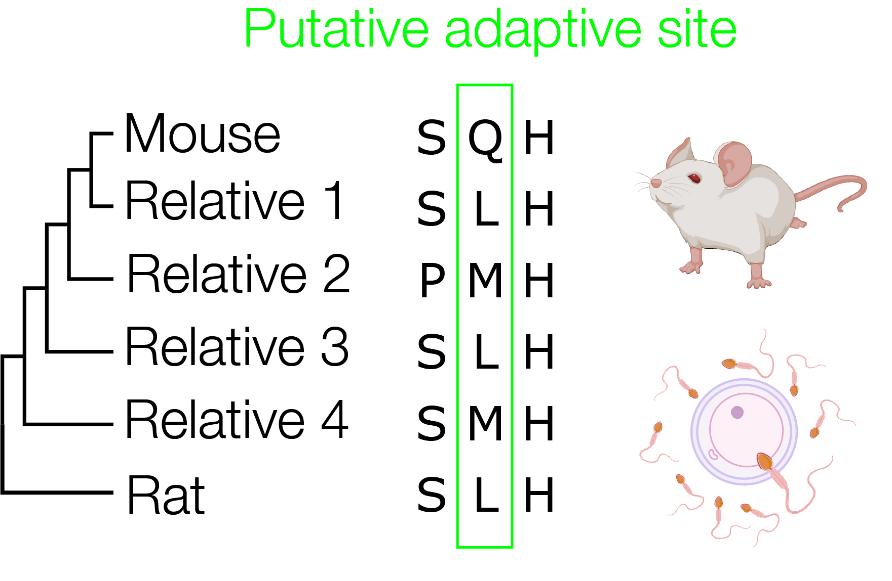
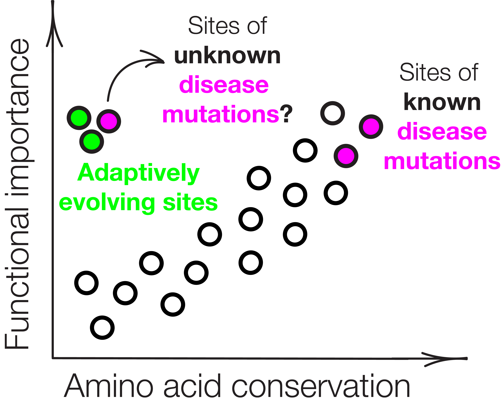
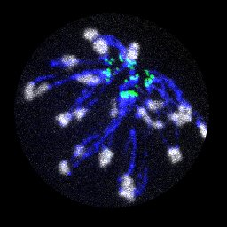
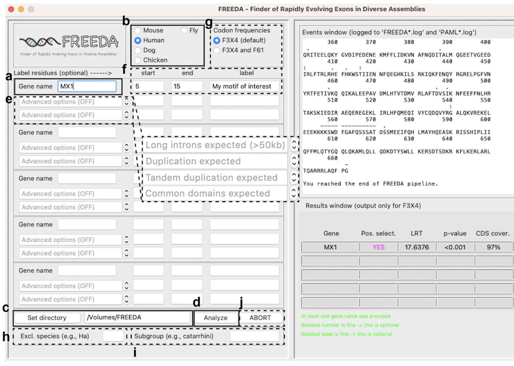
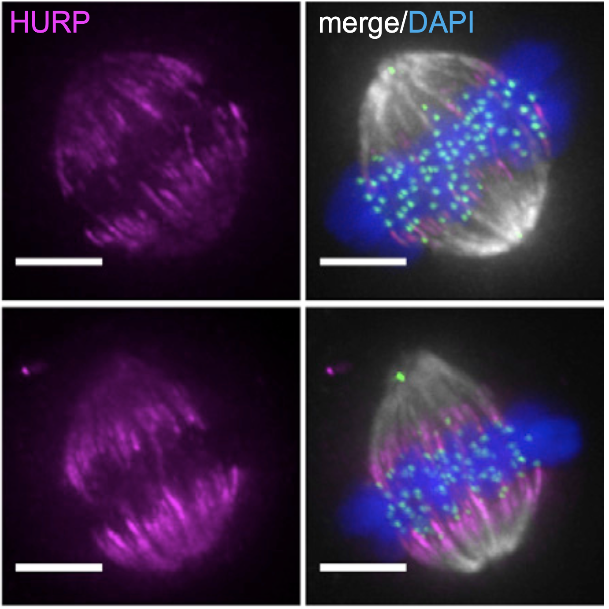
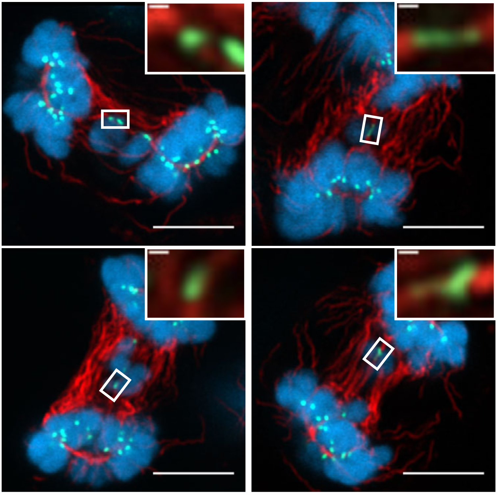

Evolutionary Cell Biology Lab
We study how the chromosome segregation machinery evolves at breakneck speed — and why that matters for fertility, development, and disease.
Research Overview
Faithful chromosome segregation is crucial for fertility, development, and tissue homeostasis. Despite such highly conserved roles, genomic analyses suggest that the chromosome segregation machinery evolves rapidly. This is a fascinating puzzle because chromosome segregation must remain highly accurate to ensure organismal viability and reproduction. Solving this puzzle requires experimental systems that test hypotheses emerging from genomic analyses. In the Dudka Lab we are building such systems by combining molecular evolution, gene editing, experimental evolution, confocal microscopy and mouse models.


Functional Constraints of Centromeric DNA Evolution
Centromeres govern the conserved process of chromosome segregation, yet they are among the most rapidly changing genomic regions. While centromeric satellite DNA divergence has been linked to disease, understanding the functional constraints of satellite divergence remains a major challenge. We employ experimental evolution assays in mouse cells to understand satellite expansion — an engine of that divergence.

Functional Impacts of Adaptive Protein Evolution
Rapid evolution of centromeric DNA can lead to chromosome mis-segregation. In response, centromeric proteins are thought to evolve adaptively to restore segregation fidelity. Although ~30% of centromeric proteins evolve adaptively, the functional impacts of these putative adaptations remain virtually unknown. We leverage molecular evolution analyses to create "mal-adapted proteins" and discover those impacts at cellular and organismal levels, using mouse as a model.

Health Implications of Mutations in Adaptive Sites
Chromosome mis-segregation underlies infertility, congenital diseases, and cancer. Models that predict pathogenicity of mutations typically assume that residue importance correlates with its conservation and protein structure. However, adaptively evolving sites escape that logic, since they rapidly accumulate mutations and are often found in unstructured regions. We combine molecular evolution and gene editing in human cells to test the impact of patient mutations at adaptive sites in centromeric proteins.
Selected Publications
Full list on the Publications page · Google Scholar.
-

Satellite DNA shapes dictate pericentromere packaging in female meiosis.
Dudka D, Dawicki-McKenna JM, Sun X, Beeravolu K, Akera T, Lampson MA, Black BE.
Nature (2025) · doi -
 Adaptive evolution of CENP-T modulates centromere binding.
Adaptive evolution of CENP-T modulates centromere binding.
Dudka D, Nguyen A, Boese K, Marescal O, Akins RB, Black BE, Cheeseman I, Lampson MA.
Current Biology (2025) · doi -

FREEDA: An automated computational pipeline guides experimental testing of protein innovation.
Dudka D, Akins RB, Lampson MA.
Journal of Cell Biology (2023) · doi -

Spindle-length-dependent HURP localization allows centrosomes to control kinetochore-fiber plus-end dynamics.
Dudka D, Castrogiovanni C, Liaudet N, Vassal H, Meraldi P.
Current Biology (2019) · doi -

Complete microtubule-kinetochore occupancy favours the segregation of merotelic attachments.
Dudka D*, Noatynska A*, Smith C, Liaudet N, McAinsh AD, Meraldi P.
Nature Communications (2018) · doi
Join Us
We are building our team at Lehigh University. We are always seeking motivated PhD students, postdocs, and undergraduates excited about chromosome biology, cell biology, and evolution.
Open Positions →
Iacocca Hall, 111 Research Drive
Bethlehem, PA 18015